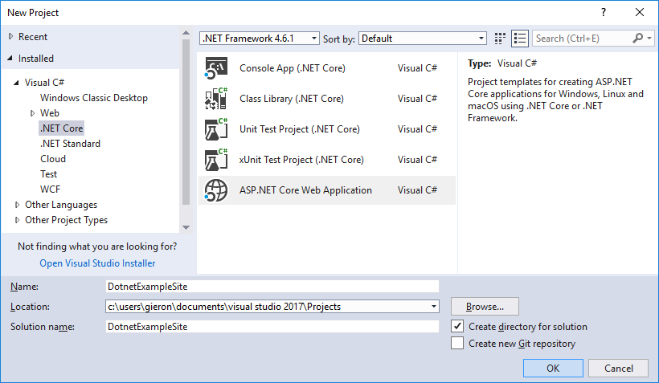
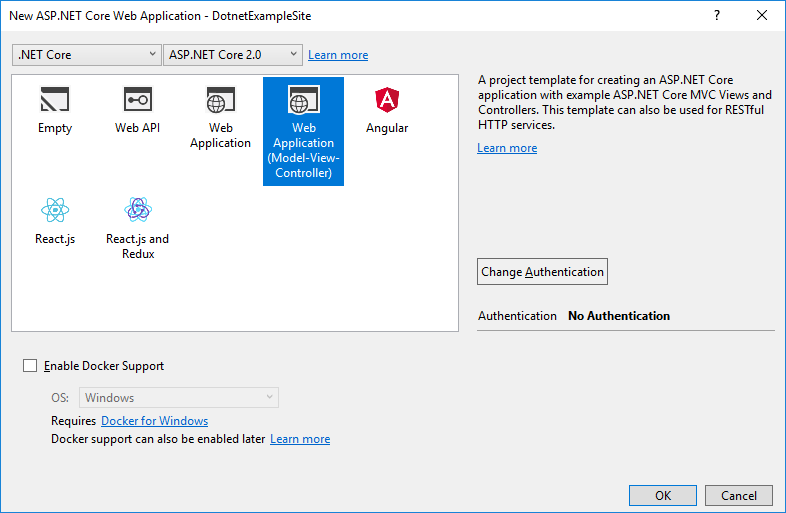
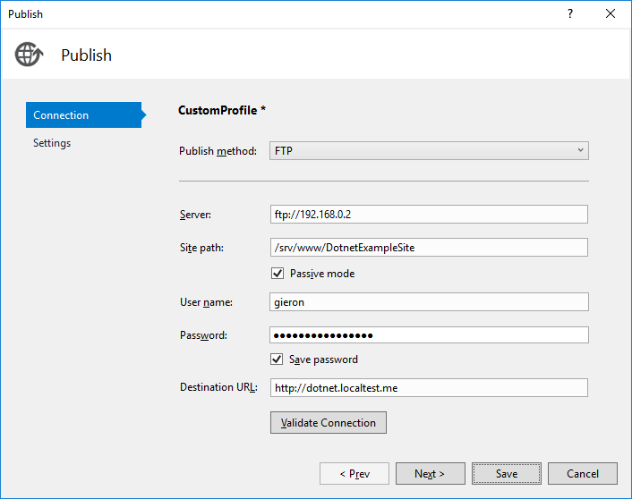

ASP.NET Core on Debian and Apache
Now that Microsoft has created .NET Core it should be possible to host a .NET website on Linux. Specifically I want to host an ASP.NET Core 2.0 website on .NET 2.0 on Debian 9 (stretch) with Apache 2.
Install .NET Core
.NET Core is not part of Debian. It must be installed from Microsoft's package feed, which is added by creating the following file:
/etc/apt/sources.list.d/dotnetdev.list
deb [arch=amd64] https://packages.microsoft.com/repos/microsoft-debian-stretch-prod stretch mainWe also need the Microsoft package key to validate packages. This must be downloaded and converted before it can be installed in the correct place.
curl https://packages.microsoft.com/keys/microsoft.asc
gpg --dearmor microsoft.asc > microsoft.gpg
sudo mv microsoft.gpg /etc/apt/trusted.gpg.d/microsoft.gpgNow we should be able to install .NET Core. This will also install ASP.NET Core.
sudo apt-get update
sudo apt-get install dotnet-sdk-2.0.3If successful the following command should display 2.0.3:
dotnet --versionCreate website
I prefer to develop my web sites in Visual Studio on Windows. Visual Studio Code can be used if you want to develop under Linux.
The web site should be an ASP.NET Core Web Application for .NET Core and ASP.NET Core 2.0. I will call this web site DotnetExampleSite because it's clever.
 Publish the site to some directory on the Debian machine. I will use /srv/www/DotnetExampleSite.
Configure Kestrel
The way ASP.NET Core works is that each web application runs its own instance of a web server called Kestrel. By default Kestrel will listen on port 5000.
To make Kestrel and our web application run we must create a systemd service. Create the following file:
/etc/systemd/system/dotnet-example-site.service
[Unit]
Description=.NET Example Site
After=network.target
[Service]
WorkingDirectory=/srv/www/DotnetExampleSite
ExecStart=/usr/bin/dotnet /srv/www/DotnetExampleSite/DotnetExampleSite.dll
Restart=always
RestartSec=10
SyslogIdentifier=dotnet-example-site
User=www-data
Environment=ASPNETCORE_ENVIRONMENT=Production
[Install]
WantedBy=multi-user.targetAs can be seen above we will run the Kestrel web server under the www-data user. This makes sense and will work well when we configure Apache next.
Before we can run the web application we need to create a directory that ASP.NET Core will use for some housekeeping.
sudo mkdir /var/www/.dotnet
sudo chown www-data:www-data /var/www/.dotnetNow we shuould be able to run the service.
sudo systemctl start dotnet-example-siteIf everything works you should now be able to view the site on port 5000.
curl http://localhost:5000Configure Apache
We could stop here. But Kestrel is a very limited web server and not intended to be exposed to the Internet. Instead it is recommended to run a more competent web server before it as a proxy. On Windows this would be IIS. On Linux is often nginx. But I will use Apache.
Begin by enabling the Apache 2 proxy modules for HTTP.
sudo a2enmod proxy
sudo a2enmod proxy_httpThen create the following file:
/etc/apache2/sites-available/dotnet-example-site.conf
<VirtualHost *:80>
ServerName gieron.localtest.me
ServerAdmin henrik@gieron.info
ProxyPreserveHost On
ProxyPass / http://localhost:5000/
ProxyPassReverse / http://localhost:5000/
</VirtualHost>Finally enable the new web site configuration.
sudo a2ensite dotnet-example-siteNow, if everything works, we should be able to navigate to the site.
curl http://gieron.localtest.me